Cateto
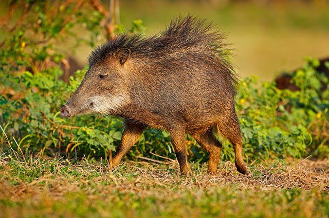
 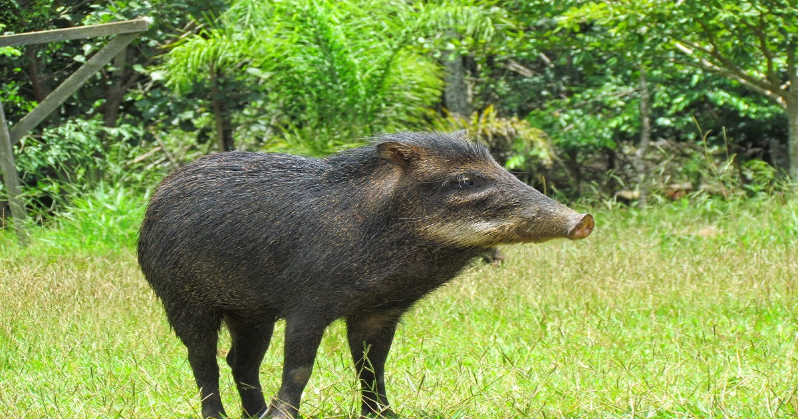
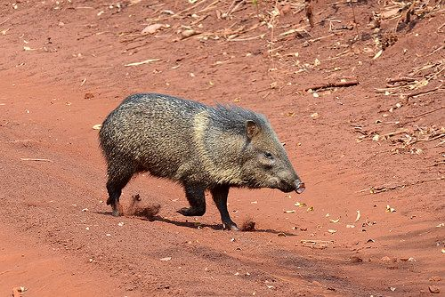
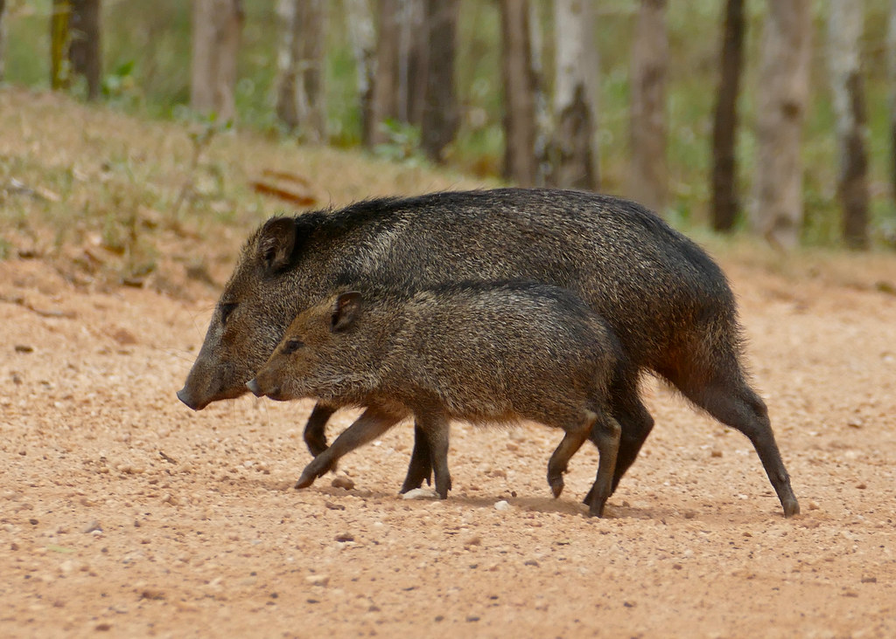
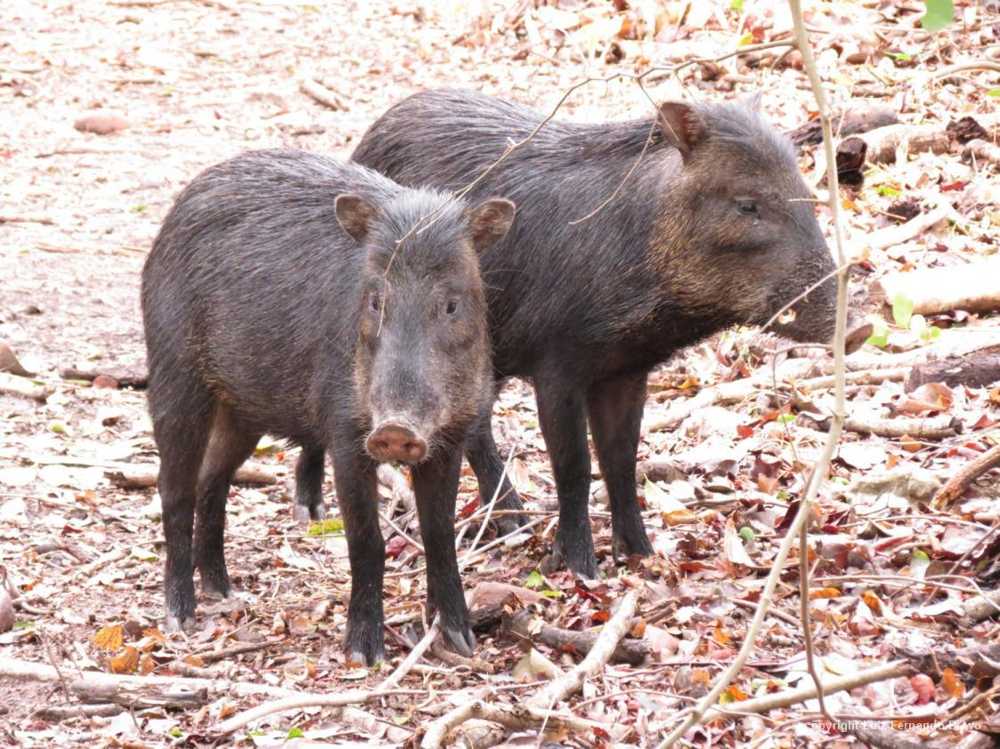
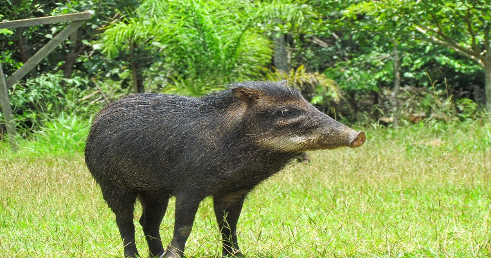
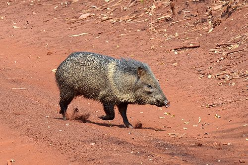
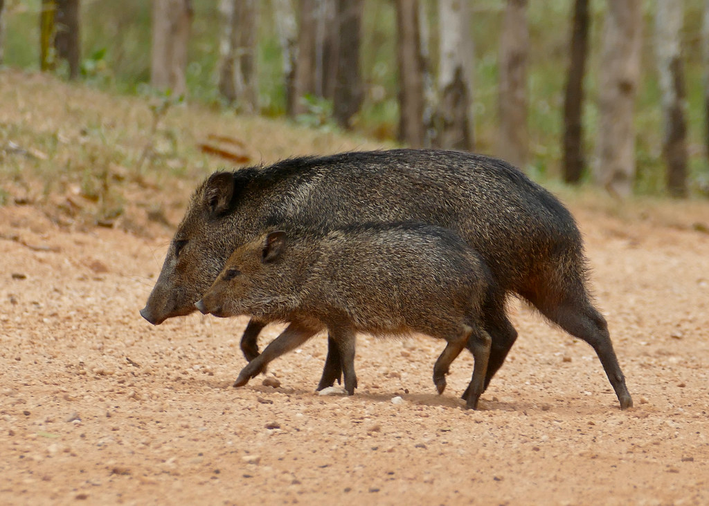
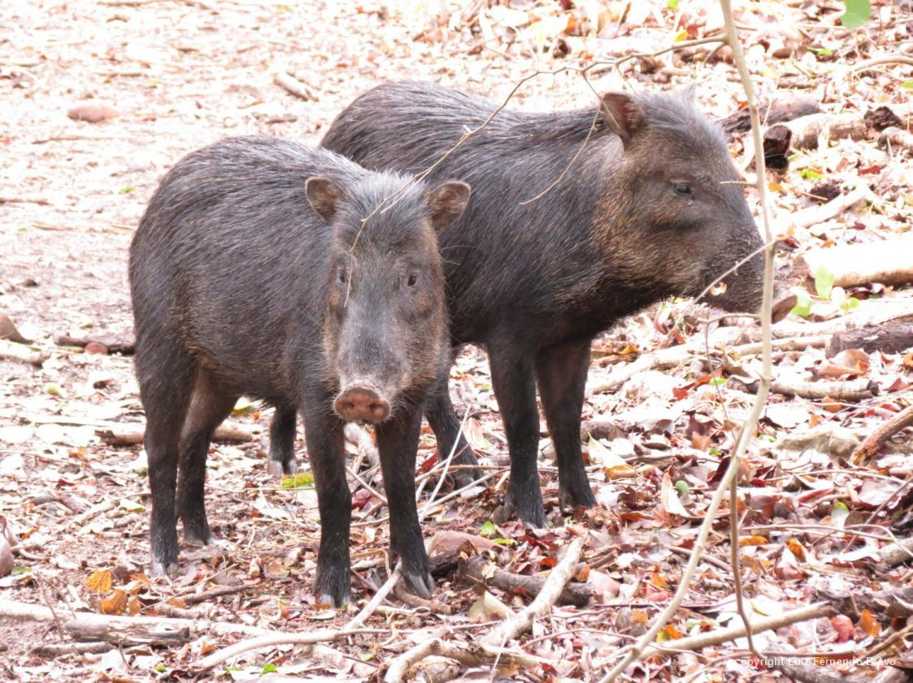
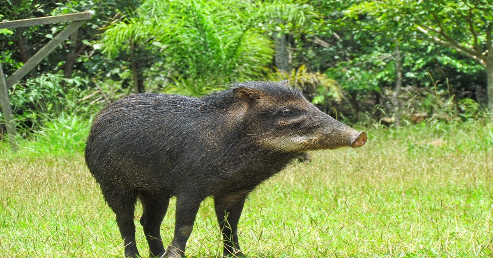
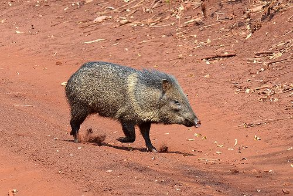
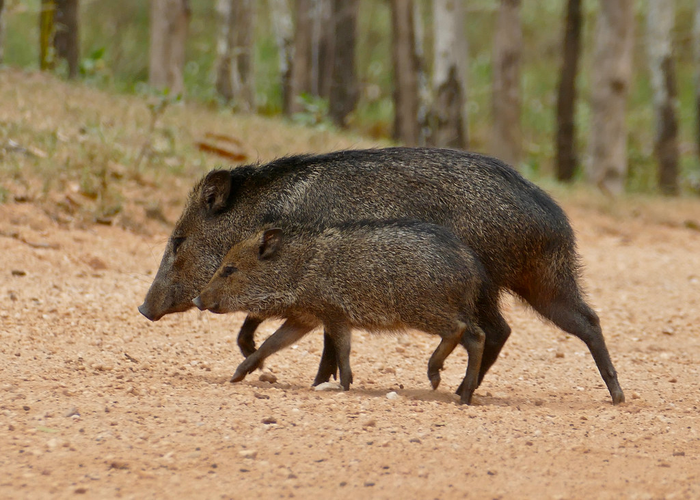
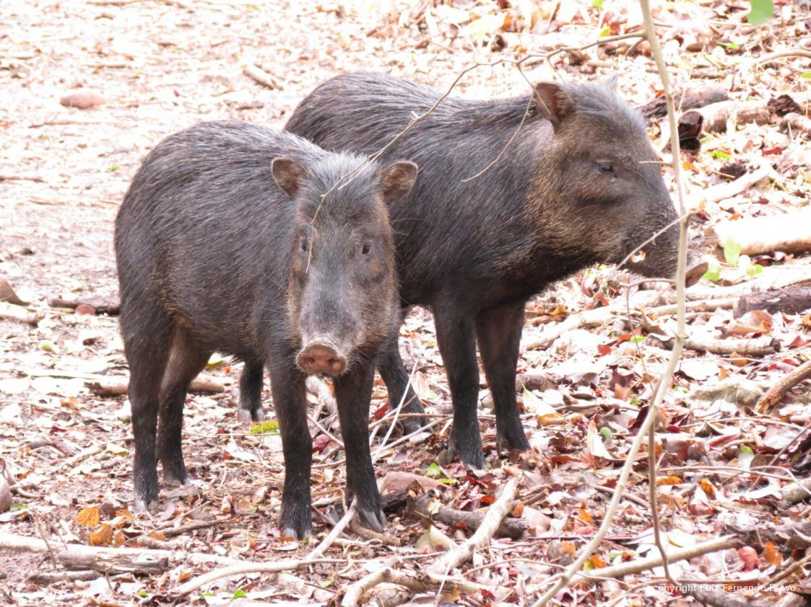
INFORMAÇÕES SOBRE O ANIMAL
- Nome Científico: Dicotyles tajacu
(Lineu, 1758) - Nomes Populares: também conhecido por caitatu, taititu, cateto, tateto, pecari, porco-do-mato e patira.
Classificação Biológica
- Dominio: Eukaryota
- Reino: Animalia
- Filo: Chordata
- Classe Mammalia
- Ordem: Artiodactyla
- Família: Taiaçuídeos
- Espécie: D. tajacu
Nutrição Geral e Hábitos Alimentares
- Tipo de Nutrição: Heterotrófico
- Os catetos nutrem-se de frutos e de raízes. Nas regiões habitadas, invadem muitas vezes as plantações e destroçam colheitas. Além dos alimentos vegetais, também comem cobras (cujas mordeduras não parecem incomodá-los), lagartos, vermes e larvas.
Morfologia
- Características do cateto : O cateto parece um pequeno queixada com 95 em de comprimento e 45 em de altura. Apresenta focinho curto e corpo afilado. Os pelos são longos e espessos, alongando-se um pouco mais sobre as orelhas e a linha mediana do dorso, sem que entretanto se possa dizer que constituem uma verdadeira crina. O peso varia de 14 a 30 kg.
Comportamento
- Dormem em tocas, muitas vezes sob as raízes de árvores, mas às vezes podem ser encontrados em cavernas ou sob troncos. Embora geralmente ignorem os humanos, reagem se se sentirem ameaçados, defendendo-se com suas presas. Um caititu pode liberar um almíscar forte ou dar um latido agudo se estiver alarmado.
Ocorrência
- Atualmente, distribuem-se desde o sul dos Estados Unidos, passando por toda América Central e América do Sul a leste dos Andes, até o norte da Argentina. Em condições naturais, os hábitos alimentares dos caititus são determinados de acordo com a disponibilidade de alimento. Nas regiões áridas dos Estados Unidos, alimentam-se basicamente de plantas suculentas do gênero Opuntia, já na caatinga brasileira, um amplo bioma xerófito, sua alimentação se compõe de raízes, tubérculos e sementes, visto que a disponibilidade de frutos e folhas depende de um regime de chuvas que pode não existir durante os períodos de secas severas nessa região.
- Mapa de Ocorrência 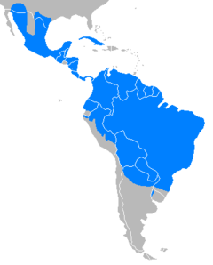
Reprodução
- O primeiro período de reprodução ocorre quando o cateto atinge de oito a dez meses, e pode procriar o ano todo - cruzamento não ocorre com outras espécies de porco-do-mato. Quando prenha, a fêmea leva de 140 a 148 dias de gestação. A cada parto, em geral dá à luz dois filhotes, que nascem com cerca de 500 gramas de peso.